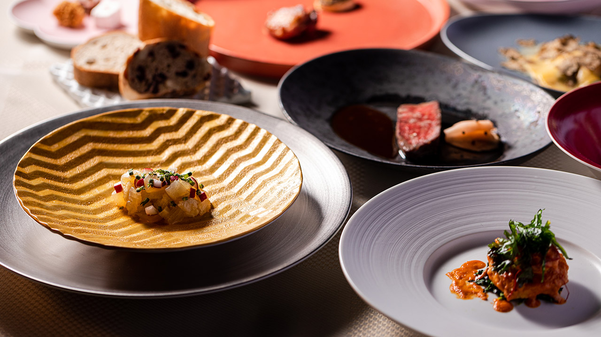
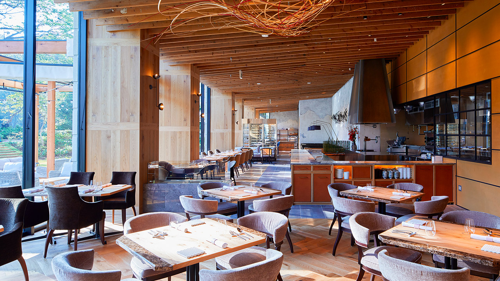
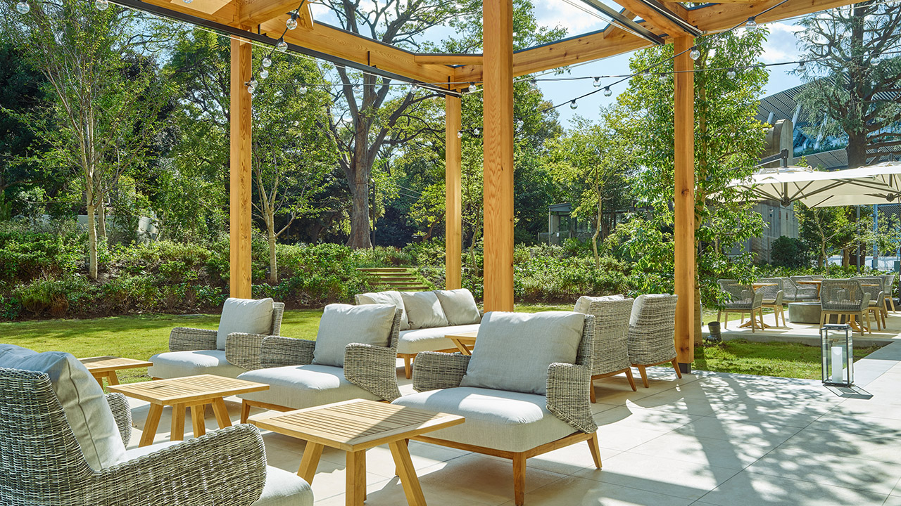
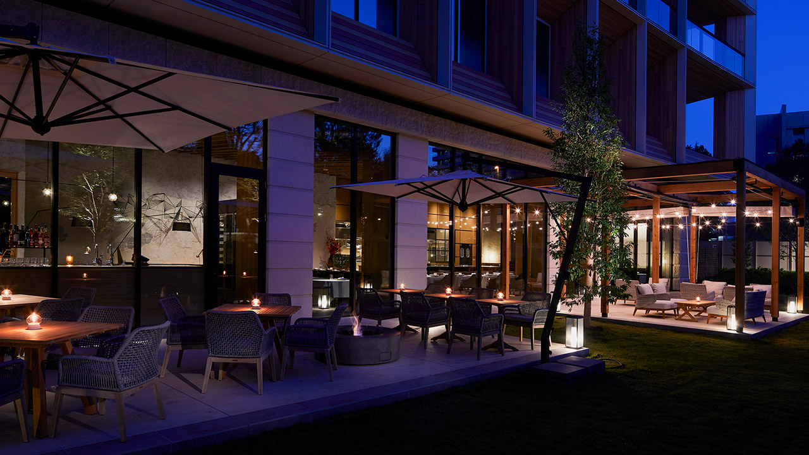
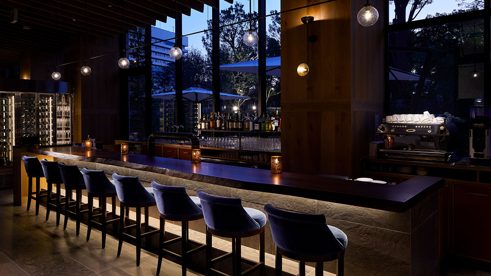
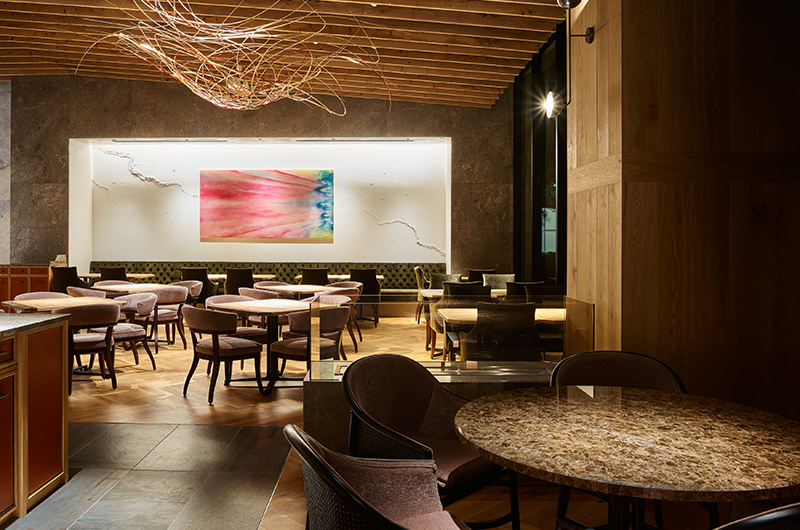
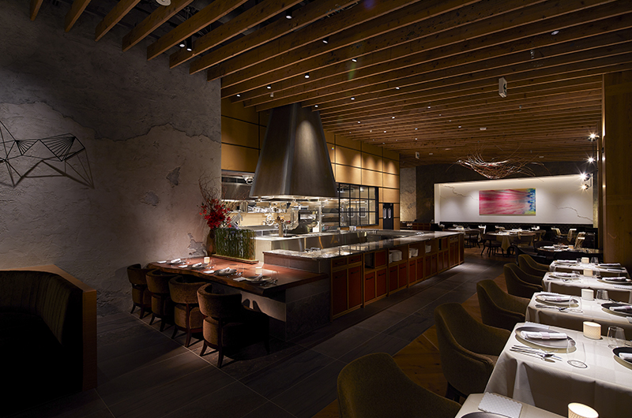
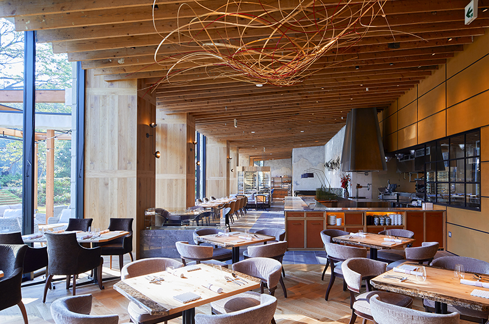
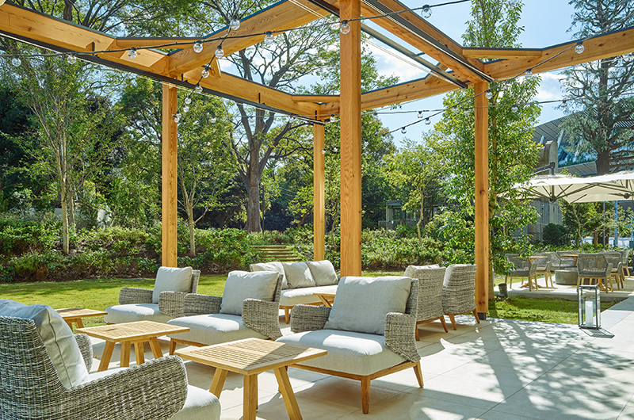
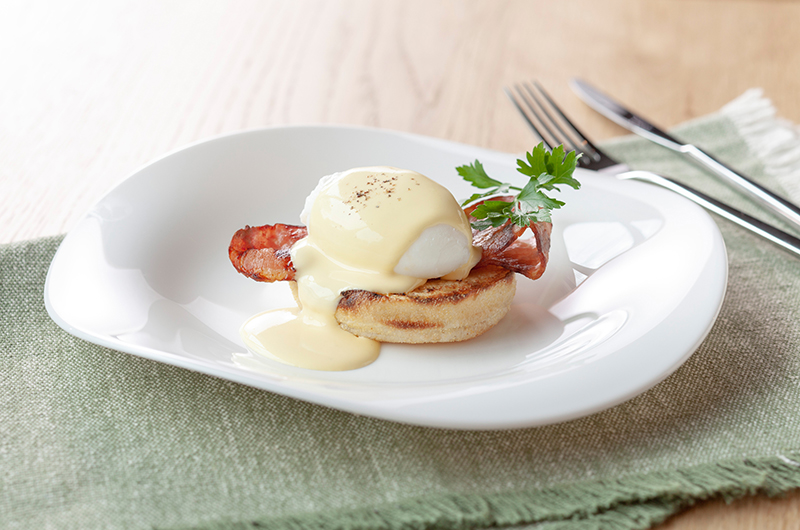

Galerie photos










Kevin, Loïc, May Nhia, Stéphanie, Estelle
Du 5 Avril au 27 Avril 2026
Restaurant italien d'hôtel avec terrasse face au secteur du Stade national, utile pour un repas plus calme à Tokyo avec service plus posé qu'un buffet classique.










E'VOLTA est une option plus posée que les grosses adresses buffet de Tokyo : restaurant italien avec terrasse, cadre d'hôtel, petit-déjeuner buffet et service du midi / soir plus classique en version à la carte ou en course.
Conversion indicative sur base 1 EUR = 183.67 JPY (BCE, 10/03/2026). Les prix hors petit-déjeuner dépendent du plan réservé et peuvent varier.